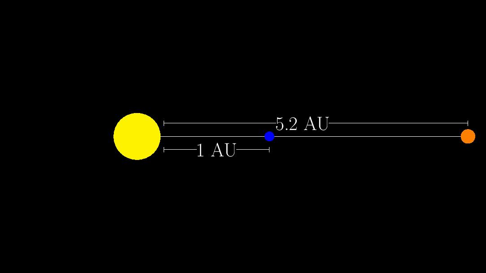

You Can Weigh Jupiter
Welcome to You Can Weigh Jupiter! In this lab, we will be observing Jupiter at opposition. Opposition is when Jupiter is opposite the Sun in the sky.
If jupiter orbits with a semi-major axis of around 5.2 AU and Earth (by definition) orbits at around 1 AU, what is the distance between the Earth and Jupiter when they're at their closest (i.e. opposition)?
The geometric configuration of opposition is shown below:

Based on the diagram, how far is Jupiter from Earth (in AU) in the configuration?